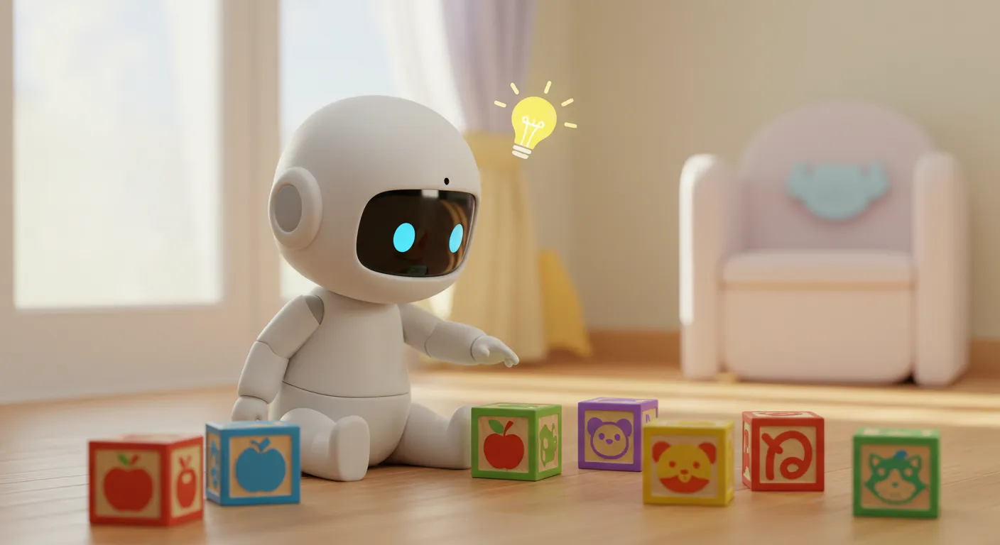

「AIに興味があるけど、何から学べばいいんだろう？」
このページは、そんなAI学習の第一歩を踏み出すあなたのための、総合案内所です。福祉の現場での実体験を基に、専門知識がなくても、楽しみながらAIと友達になれるコンテンツだけを厳選しました。さあ、あなただけの学びの旅を始めましょう！
ステップ1：まずはここから！AIの全体像を掴む
AIの世界は広大ですが、心配はいりません。まずはこの入門講座で、AIがどんなもので、私たちに何をもたらしてくれるのか、その全体像を掴みましょう。物語を読むように、リラックスして読み進めてください。

ステップ2：ゲームで体験！AIの「学び方」をのぞいてみよう
AIはどうやって賢くなるのでしょうか？その秘密を、クリックだけで遊べる体験型アプリで楽しく学んでみましょう。「百聞は一見にしかず」です！

体験アプリ
学習デモ：AIってなんだろう？
AIの正体や得意なことを、音声やクイズでインタラクティブに体験。AIマスターへの第一歩を、ここから始めましょう！

体験アプリ
AIの赤ちゃん 育成アプリ
「教師あり/なし学習」の違いを、AIの赤ちゃんを育てるゲームで楽しく体験！AIの基本が直感的にわかります。
ステップ3：自分だけの地図を作る！学習計画を立てよう
AIの基本がわかったら、次はいよいよあなた自身の学習計画を立てる番です。AIを最高の相談相手にして、あなただけのロードマップを作りましょう。
ブログ記事
AI学習は「何を作るか」が9割
学びが楽しく続く、"作りたいもの"を原動力にする目標設定の3つのコツを実体験から解説します。
ブログ記事
【福祉×AI実体験】AI学習ロードマップの作り方
専門知識ゼロから自分だけの学習計画を立てる4ステップを解説。「何から始めれば…」と悩むあなたの独学を応援します。

プロンプト
ロードマップ作成プロンプト (バランス型)
AIに質問項目をあらかじめ指定することで、手軽さと精度を両立した学習計画やキャリアプランを作成できます。

プロンプト
AI読書感想文
AIとの対話を通じて子供の心の中から「書きたいこと」を引き出し、楽しく感想文を完成させます。

プロンプト
AI Excel & スプレッドシート関数
「やりたいこと」を伝えるだけで、Excelとスプレッドシート両方に最適な数式を解説付きで教えてくれます。

プロンプト
AIプロンプト自動設計(上級者向け)
プロンプト自体をAIに設計させる上級者向けプロンプト。最適な対話戦略を共同で構築します。
ステップ4：どの道具を選ぶ？最適なAIツールを見つけよう
学習の旅に出るためには、信頼できる相棒（ツール）が必要です。この診断チャートで、今のあなたにピッタリのAIツールを見つけてください。
ステップ5：動画で学ぶ！YouTube講座
文字だけでは分かりにくい部分も、動画なら安心。AIやPCの難しいスキルを、初心者でも楽しく、そして挫折せずに学べる動画コンテンツを配信しています。